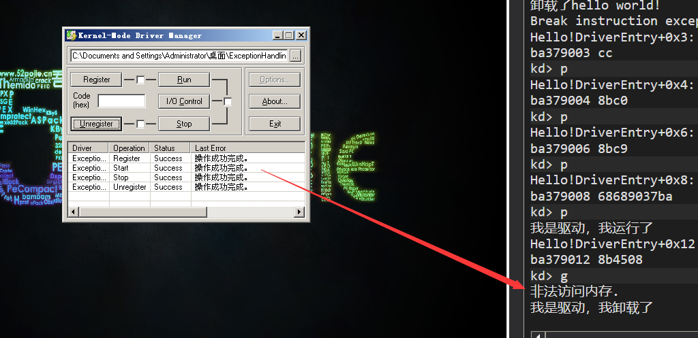
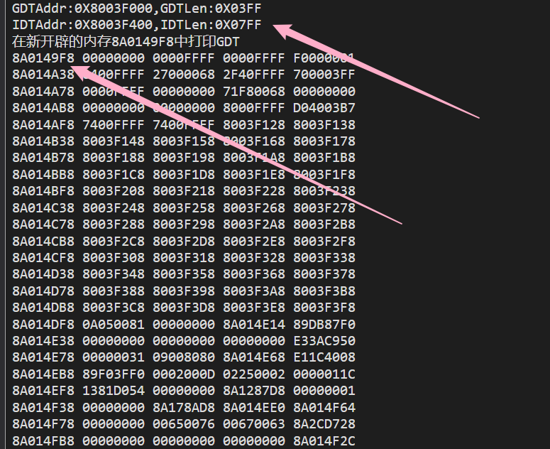
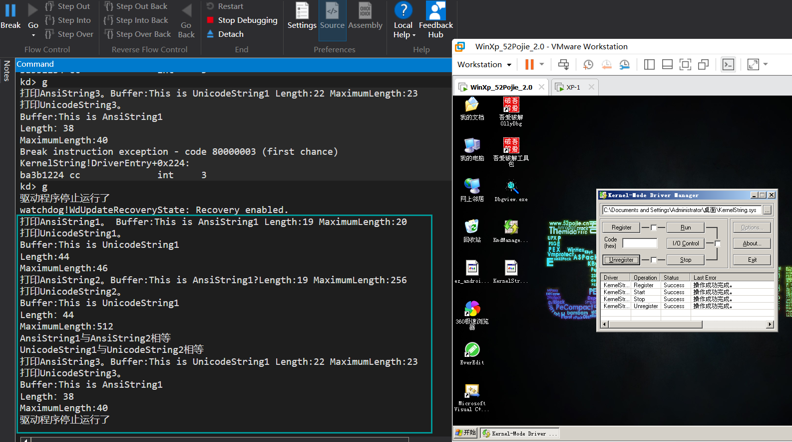

# 未文档化函数、未导出函数
未文档化就是 WDK 文档里搜不到，但是在导出表里的函数，要使用这种函数可以使用 GetProcAddress 函数获取函数地址；
未导出函数就是不在导出表的函数，可以通过特征码搜索或者解析内核 PDB 的方式找到函数地址，通过函数指针调用。
# WDK 数据类型
WDK 数据类型在 ntdef.h 中定义，下面列举部分，注意，并没有 UINT
typedef unsigned char UCHAR; | |
typedef unsigned short USHORT; | |
typedef unsigned long ULONG; |
# NTSTATUS 返回值
很多内核函数的返回值都是 NTSTATUS，这是一个 4 字节整型。
例如：
STATUS_SUCCESS 0x00000000 成功 | |
STATUS_INVALID_PARAMETER 0xC000000D 参数无效 | |
STATUS_BUFFER_OVERFLOW 0x80000005 缓冲区长度不够 |
# 内核异常处理
在内核中，一个小小的错误就可能导致蓝屏，比如：读写一个无效的内存地址。为了让自己的内核程序更加健壮，强烈建议大家在编写内核程序时，使用异常处。
Windows 提供了结构化异常处理机制，一般的编译器都是支持的，如下：
__try{
//可能出错的代码
}
__except(filter_value) {
//出错时要执行的代码
}
出现异常时，可根据 filter_value 的值来决定程序该如果执行，当 filter_value 的值为：EXCEPTION_EXECUTE_HANDLER(1) ，代码进入 except 块EXCEPTION_CONTINUE_SEARCH(0) ，不处理异常，由上一层调用函数处理EXCEPTION_CONTINUE_EXECUTION(-1) ，回去继续执行错误处的代码
在火哥的视频中，火哥说加了这玩意该蓝屏还是蓝屏…… 试了试确实……。
演示代码：
#include<ntddk.h> | |
VOID DriverUnload(PDRIVER_OBJECT pdriver) { | |
DbgPrint("我是驱动，我卸载了\n"); | |
} | |
NTSTATUS DriverEntry(PDRIVER_OBJECT pdriver, PUNICODE_STRING pReg) { | |
__try | |
{ | |
PULONG ptr = NULL; | |
*ptr = 0; | |
} | |
__except (EXCEPTION_EXECUTE_HANDLER) | |
{ | |
DbgPrint("非法访问内存.\r\n"); | |
} | |
pdriver->DriverUnload = DriverUnload; | |
return STATUS_SUCCESS; | |
} |

# 常用的内核内存函数
| C 语言 | 内核 |
|---|---|
| malloc | ExAllocatePool |
| memset | RtlFillMemory |
| memcpy | RtlMoveMemory |
| free | ExFreePool |
# 内核字符串及常用字符串函数
为了提高安全性，内核中的字符串不再是字符串首地址指针作为开始，0 作为结尾，而是采用了以下两个结构体：
ANSI_STRING 字符串：
typedef struct _STRING | |
{ | |
USHORT Length; | |
USHORT MaximumLength; | |
PCHAR Buffer; | |
}STRING; |
UNICODE_STRING 字符串：
typedef struct _UNICODE_STRING | |
{ | |
USHORT Length; | |
USHORT MaxmumLength; | |
PWSTR Buffer; | |
} UNICODE_STRING; |
下面的表格列出了常用的字符串函数：
| 功能 | ANSI_STRING 字符串 | UNICODE_STRING 字符串 |
|---|---|---|
| 创建 | RtlInitAnsiString | RtlInitUnicodeString |
| 复制 | RtlCopyString | RtlCopyUnicodeString |
| 比较 | RtlCompareString | RtlCompareUnicoodeString |
| 转换 | RtlAnsiStringToUnicodeString | RtlUnicodeStringToAnsiString |
# 课后练习
申请一块内存，并在内存中存储 GDT、IDT 的所有数据。然后在 debugview 中显示出来，最后释放内存。
编写代码，实现如下功能：
初始化一个字符串（）
拷贝一个字符串
比较两个字符串是否相等
ANSI_STRING 与 UNICODE_STRING 字符串相互转换
# 第 1 题
#include <ntddk.h> | |
#include <ntdef.h> | |
// 卸载函数 | |
VOID DriverUnload(PDRIVER_OBJECT pdriver) | |
{ | |
DbgPrint("驱动程序停止运行了.\r\n"); | |
} | |
// 入口函数，相当于 main | |
NTSTATUS DriverEntry(PDRIVER_OBJECT pdriver, PUNICODE_STRING pRegPath) | |
{ | |
UCHAR GDT[6], IDT[6]; | |
ULONG GDTAddr, IDTAddr; | |
USHORT GDTLen, IDTLen; | |
PULONG pbuffer; | |
ULONG i; | |
__asm { | |
sgdt GDT; | |
sidt IDT; | |
} | |
GDTAddr = *(PULONG)&GDT[2]; | |
//GDTAddr = *(PULONG)(GDT+2); | |
GDTLen = *(PUSHORT)&GDT[0]; | |
IDTAddr = *(PULONG)&IDT[2]; | |
IDTLen = *(PUSHORT)&IDT[0]; | |
DbgPrint("GDTAddr:%#010X,GDTLen:%#06X\n", GDTAddr, GDTLen); | |
DbgPrint("IDTAddr:%#010X,IDTLen:%#06X\n", IDTAddr, IDTLen); | |
pbuffer = ExAllocatePoolWithTag(NonPagedPool, GDTLen, "MemGdt"); | |
if (pbuffer == NULL) | |
{ | |
DbgPrint("申请内存失败1\n"); | |
return STATUS_UNSUCCESSFUL; | |
} | |
RtlMoveMemory(pbuffer, GDTAddr, GDTLen); | |
DbgPrint("在新开辟的内存%p中打印GDT\n", pbuffer); | |
for ( i = 0; i < GDTLen; i+=16) | |
{ | |
DbgPrint("%08X %08X %08X %08X %08X\n", | |
pbuffer + i, | |
*(PULONG)(pbuffer + i), | |
*(PULONG)(pbuffer + i + 4), | |
*(PULONG)(pbuffer + i + 8), | |
*(PULONG)(pbuffer + i + 12)); | |
} | |
ExFreePoolWithTag(pbuffer, "MemGdt"); | |
pbuffer = ExAllocatePoolWithTag(NonPagedPool, IDTLen, "MemIdt"); | |
if (pbuffer == NULL) | |
{ | |
DbgPrint("申请内存失败2\n"); | |
return STATUS_UNSUCCESSFUL; | |
} | |
RtlMoveMemory(pbuffer, GDTAddr, GDTLen); | |
DbgPrint("在新开辟的内存%p中打印IDT\n", pbuffer); | |
for (i = 0; i < GDTLen; i += 16) | |
{ | |
DbgPrint("%08X %08X %08X %08X %08X\n", | |
pbuffer + i, | |
*(PULONG)(pbuffer + i), | |
*(PULONG)(pbuffer + i + 4), | |
*(PULONG)(pbuffer + i + 8), | |
*(PULONG)(pbuffer + i + 12)); | |
} | |
ExFreePoolWithTag(pbuffer, "MemGdt"); | |
pdriver->DriverUnload = DriverUnload; | |
return STATUS_SUCCESS; | |
} |

# 第 2 题
#include<ntddk.h> | |
#include <ntdef.h> | |
VOID DriverUnload(PDRIVER_OBJECT pdriver) | |
{ | |
DbgPrint("驱动程序停止运行了\n"); | |
} | |
NTSTATUS DriverEntry(PDRIVER_OBJECT pdriver, PUNICODE_STRING pReg) { | |
ANSI_STRING AnsiString1, AnsiString2, AnsiString3; | |
UNICODE_STRING UnicodeString1, UnicodeString2, UnicodeString3; | |
CHAR Buf1[256], Buf2[256]; | |
WCHAR wcBuf1[256], wcBuf2[256]; | |
// 初始化字符串 | |
RtlInitAnsiString(&AnsiString1, "This is AnsiString1"); | |
RtlInitUnicodeString(&UnicodeString1, L"This is UnicodeString1"); | |
RtlInitEmptyAnsiString(&AnsiString2, Buf1, 256 * sizeof(CHAR)); | |
RtlInitEmptyAnsiString(&AnsiString3, Buf2, 256 * sizeof(CHAR)); | |
RtlInitEmptyUnicodeString(&UnicodeString2, wcBuf1, 256 * sizeof(WCHAR)); | |
RtlInitEmptyUnicodeString(&UnicodeString3, wcBuf2, 256 * sizeof(WCHAR)); | |
DbgPrint("打印AnsiString1。 Buffer:%s Length:%d MaximumLength:%d\n", AnsiString1.Buffer, AnsiString1.Length, AnsiString1.MaximumLength); | |
DbgPrint("打印UnicodeString1。 \nBuffer:%ws \nLength:%d \nMaximumLength:%d\n", UnicodeString1.Buffer, UnicodeString1.Length, UnicodeString1.MaximumLength); | |
// 拷贝字符串 | |
RtlCopyString(&AnsiString2, &AnsiString1); | |
RtlCopyUnicodeString(&UnicodeString2, &UnicodeString1); | |
DbgPrint("打印AnsiString2。Buffer:%s Length:%d MaximumLength:%d\n", AnsiString2.Buffer, AnsiString2.Length, AnsiString2.MaximumLength); | |
DbgPrint("打印UnicodeString2。\nBuffer:%ws \nLength：%d \nMaximumLength:%d\n", UnicodeString2.Buffer, UnicodeString2.Length, UnicodeString2.MaximumLength); | |
// 比较字符串 | |
if (RtlCompareString(&AnsiString1, &AnsiString2, TRUE) == 0) | |
{ | |
DbgPrint("AnsiString1与AnsiString2相等\n"); | |
} | |
else | |
DbgPrint("AnsiString1与AnsiString2不相等\n"); | |
if (RtlCompareUnicodeString(&UnicodeString1, &UnicodeString2, TRUE) == 0) | |
{ | |
DbgPrint("UnicodeString1与UnicodeString2相等\n"); | |
} | |
else | |
DbgPrint("UnicodeString1与UnicodeString2不相等\n"); | |
// 转化字符串 | |
RtlAnsiStringToUnicodeString(&UnicodeString3, &AnsiString1, TRUE); | |
RtlUnicodeStringToAnsiString(&AnsiString3, & UnicodeString1, TRUE); | |
DbgPrint("打印AnsiString3。Buffer:%s Length:%d MaximumLength:%d\n", AnsiString3.Buffer, AnsiString3.Length, AnsiString3.MaximumLength); | |
DbgPrint("打印UnicodeString3。\nBuffer:%ws \nLength：%d \nMaximumLength:%d\n", UnicodeString3.Buffer, UnicodeString3.Length, UnicodeString3.MaximumLength); | |
pdriver->DriverUnload = DriverUnload; | |
return STATUS_SUCCESS; | |
} |
